Personal finance for India that never leaves your phone
SMS and statement driven tracking of spends, cards and rewards, bills, loans, insurance, salary, provident fund and wealth. Everything is stored on the device. There is no account, no server and nothing is uploaded.
Demo document. Every name, number and amount in the screenshots and in this PDF is invented for the demo. No real account or person is shown.
What is in the box
8 feature areas, 30 features and 19 screens. The next pages show each area with screens from the demo data.
📥 Capture
Get transactions in without typing them.
Bank SMS trackingStatement importManual entriesLink and tidyCategories
💳 Cards, accounts and rewards
Every card and account, with the rewards each should have earned.
Credit cardsDebit cards and bank accountsReward rules per cardRewards auditCard statements as bills
🧾 Bills
Every bill in one list: cards, electricity, mobile, broadband, gas and more.
One list, grouped by urgencyElectricity trackerGas cylinder trackerMobile, broadband and more
📈 Wealth
What you own, grouped the way you think about it.
Allocation by groupPPF done properlyFunds, stocks, gold, NPS
💼 Salary and provident fund
Payslips, tax and PF worked out from your own documents.
SalaryProvident fund
🏦 Debt, insurance and yearly costs
Loans, premiums and the costs that arrive once a year.
Loans and EMIsPrepay what-ifInsuranceYearly costs
💡 Insights
Use the data you already have.
Card advisorAdvisoryCharts
🔒 Your data and the app
Private by design, easy to move.
Local onlyBackup and restoreAndroid and PWAConsistent navigation
📥 Capture
Get transactions in without typing them.
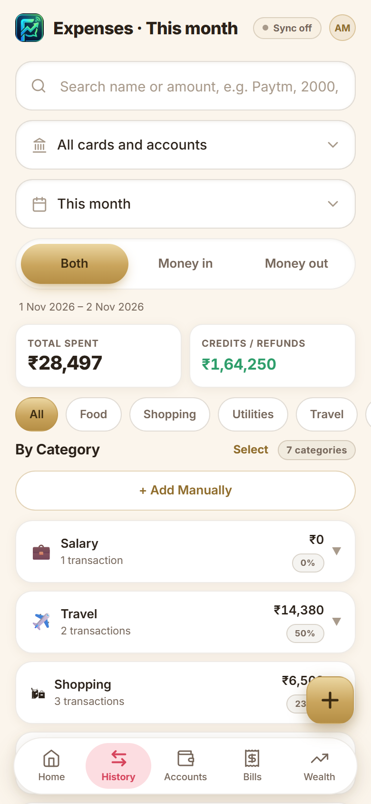
History
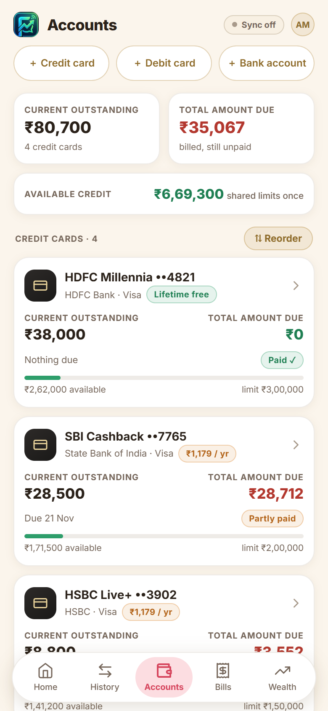
Accounts
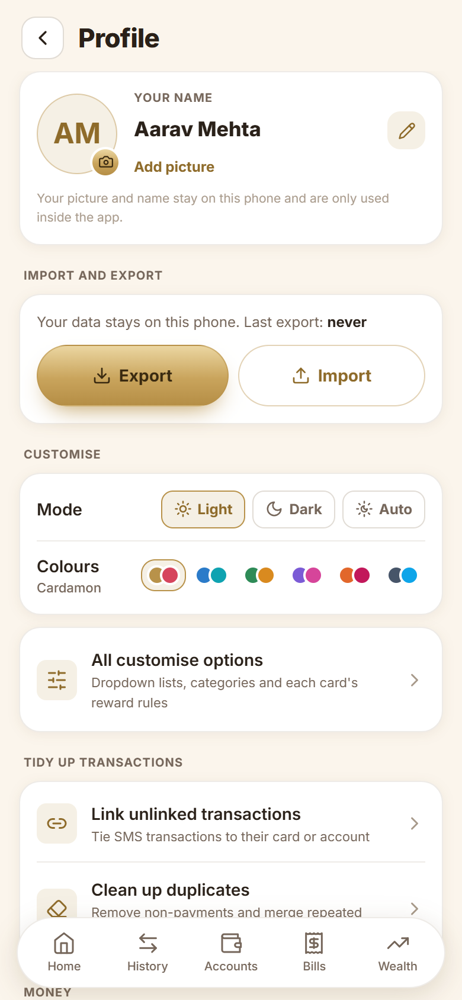
Profile
Bank SMS tracking. On Android the app reads bank SMS on the phone and turns them into transactions: card spends, UPI, ATM withdrawals, credits, refunds, cashback and bill payments. OTPs, failed payments and balance-only messages are ignored. Two SMS about one payment are merged into one entry.
Statement import. Bank and credit-card statements as PDF (including password-protected ones), Excel or CSV. Columns are found by themselves, Dr/Cr and C/D markers are understood, the running balance is checked line by line, and the bank's own totals are compared so you know nothing was missed. Entries you already have are matched, not doubled.
Manual entries. Add an expense or income against a card or bank account. Card balances and account balances move just as an SMS would move them.
Link and tidy. Link unlinked transactions to their card or account with checkboxes, or pick the account yourself when the SMS has no digits. Clean up duplicates and non-payments. Transfers between your own accounts are paired so they do not count as income or spending.
Categories. A short, simple category list. Rename a category and every transaction follows. Change the category of many transactions at once. Dropdown lists (banks, networks, insurers, providers) are yours to edit.
💳 Cards, accounts and rewards
Every card and account, with the rewards each should have earned.
Accounts
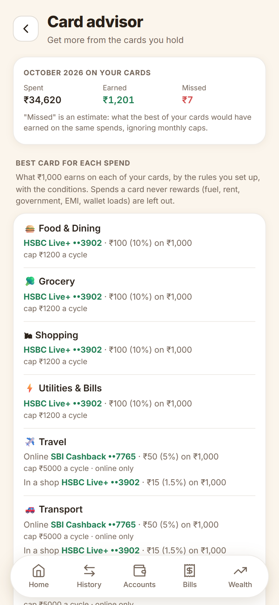
Card advisor
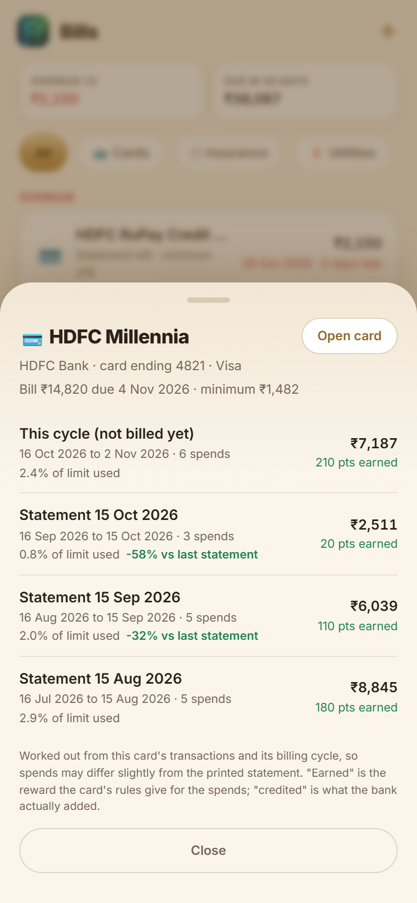
Card statements
Credit cards. Limit, available credit, billing cycle, due date, billed and unbilled spends, statement paid or pending, minimum due, shared limits across cards, payments you record, annual fee and fee-waiver spend. 50 popular Indian cards come bundled; a card can be added from its statement or welcome letter.
Debit cards and bank accounts. Balances follow the "Avl bal" in SMS, or move with each spend or credit when the SMS has none. A debit card can be linked to its account, and "Recalculate from transactions" rebuilds a balance from the bank's last reported figure.
Reward rules per card. Cashback or points, accelerated rates by category, merchant, MCC or online/in-shop, minimum spend, caps per cycle or month, exclusions (fuel, rent, government, EMI, wallet loads) and versions that start on a date, so a bank's later change never rewrites the past. Rules can be updated from the bundled library.
Rewards audit. What each card should have earned in a cycle against what the bank credited, with the transactions behind any gap. A cashback summary shows credited cashback by month.
Card statements as bills. Tap a card in Bills to see the open cycle and past statements: spends, payments, reward earned, cashback credited, limit used and the change from the statement before.
🧾 Bills
Every bill in one list: cards, electricity, mobile, broadband, gas and more.
Bills
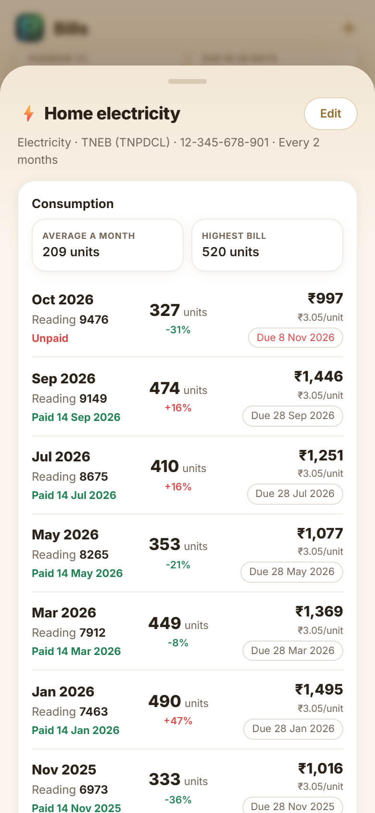
Electricity bill
One list, grouped by urgency. Overdue, due this week, coming up and paid, with totals for overdue and the next 30 days. Filter by Cards, Insurance, Utilities, Telecom and Other. Mark a bill paid in one tap and its next due date follows.
Electricity tracker. Each bill carries its own date of reading, meter reading, due date, units and amount. Units are worked out from the meter reading and the last one, or typed. See units a month, rupees a unit, the change from the bill before, and the paid date. Import the electricity board's consumption table in one paste.
Gas cylinder tracker. Log when a cylinder was booked and when you started using it. The app learns how many days one lasts and tells you when to book the next.
Mobile, broadband and more. Prepaid recharges by validity (28, 56 or 84 days), broadband, water, DTH and OTT, rent. Provider dropdowns hold electricity boards, gas companies, mobile and broadband operators, and anything you add.
📈 Wealth
What you own, grouped the way you think about it.
Wealth
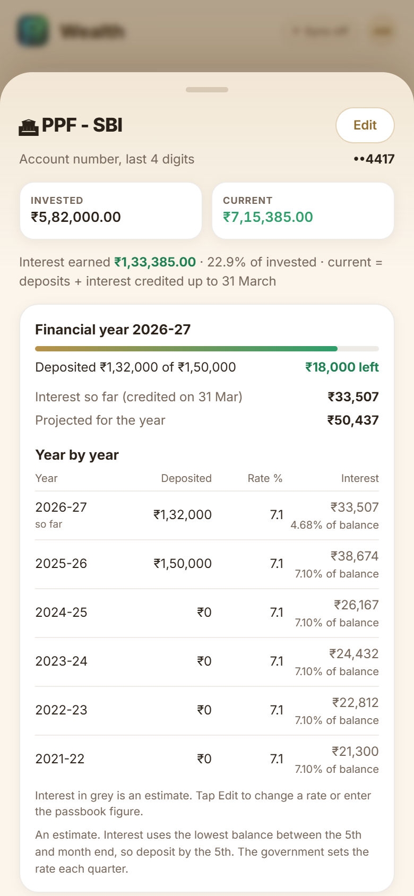
PPF
Allocation by group. Retirement (PPF, provident fund, NPS), Market (equity, mutual funds) and Safe (gold, deposits, other), each with a subtotal and percentage. Tap an asset to see its accounts and details.
PPF done properly. Log deposits, see the ₹1.5 lakh yearly limit, and get interest by the real rule (lowest balance between the 5th and month end, credited on 31 March). The current value is deposits plus interest credited, year by year, with the rate per year and the passbook figure when you have it.
Funds, stocks, gold, NPS. Invested against current value, gain and percentage, entries you can edit, and the last four digits of the account number.
💼 Salary and provident fund
Payslips, tax and PF worked out from your own documents.
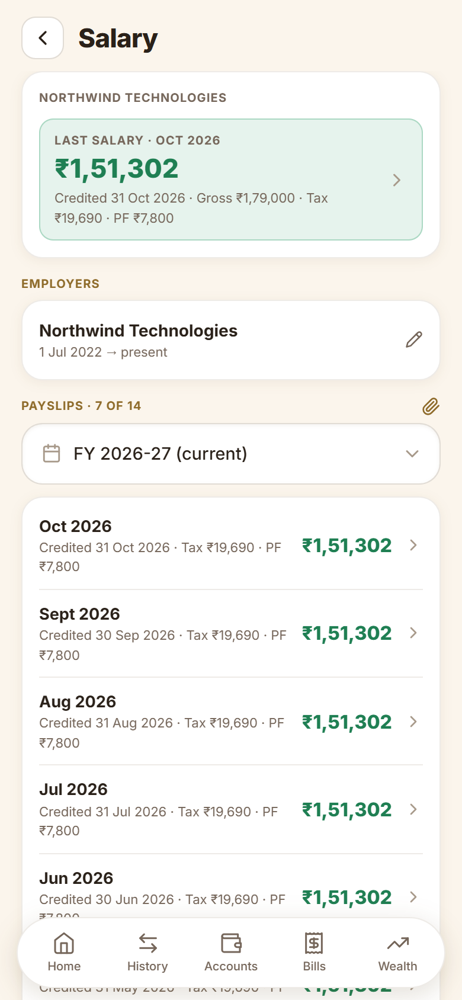
Salary
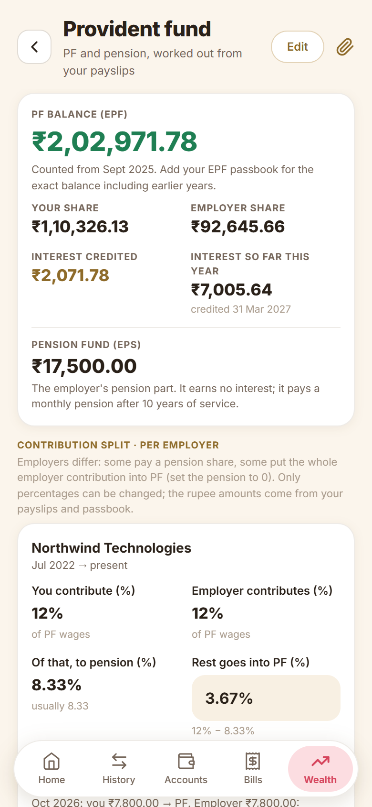
Provident fund
Salary. Employers, CTC revisions, and one payslip per month. A payslip parser reads single payslips, registers and common layouts on the phone and stores no payslip files. Yearly gross, tax, PF and take-home totals, and a check against the credit in your bank.
Provident fund. Employee and employer shares, the pension (EPS) share capped at ₹1,250 where it applies, and the rest to PF. Each employer has its own split. Interest per financial year, passbook figures from a PDF or a pasted EPFO table, and the balance after each year.
🏦 Debt, insurance and yearly costs
Loans, premiums and the costs that arrive once a year.
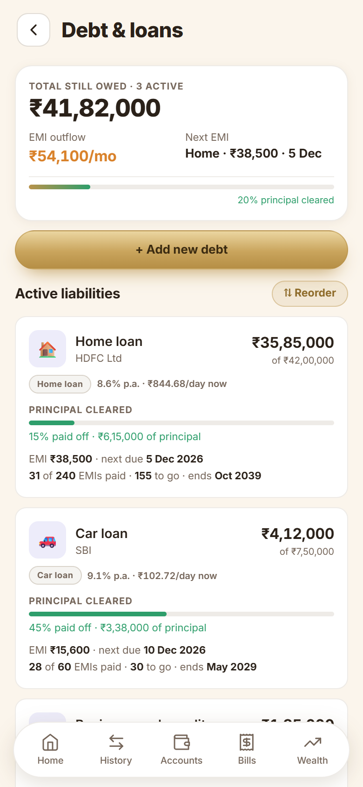
Debt and loans
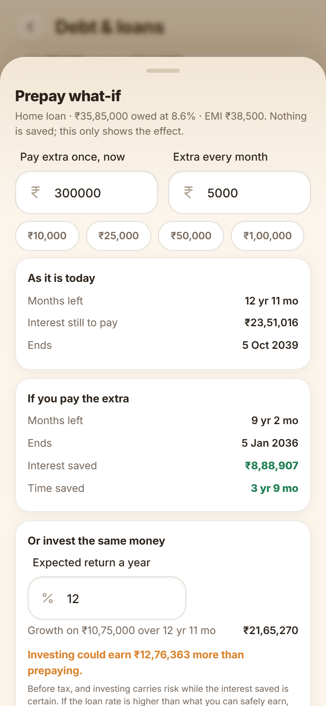
Prepay what-if
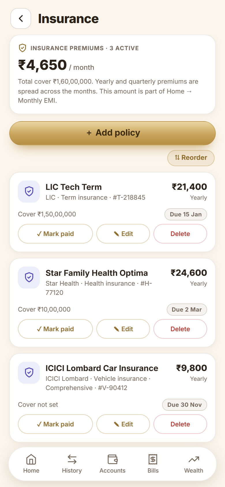
Insurance
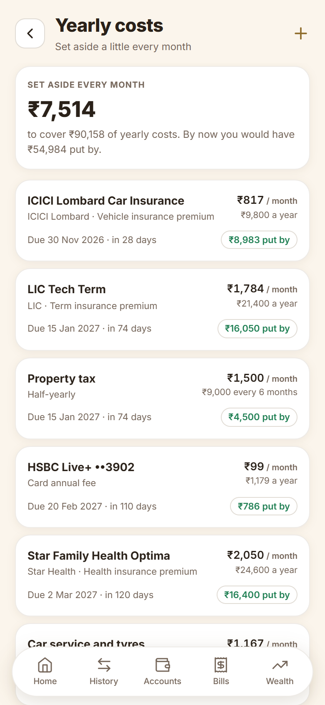
Yearly costs
Loans and EMIs. Reducing-balance loans, fixed-EMI purchases and a bank's own pasted schedule. A ledger of payments, the schedule still to come, part payments that shorten the loan, and EMIs posted on their due date.
Prepay what-if. Pay extra once or every month and see the interest saved and the time cut, then compare it with investing the same money. Flexible loans such as cash credit and overdraft work from the monthly payment you choose.
Insurance. Policies with insurer, type, cover, premium, frequency and next due date. Premiums count as a monthly outgo and appear in Bills when due.
Yearly costs. Yearly, half-yearly and quarterly premiums, card annual fees and costs you add (car service, property tax) become one monthly amount to set aside, with how much you would have put by.
💡 Insights
Use the data you already have.
Card advisor
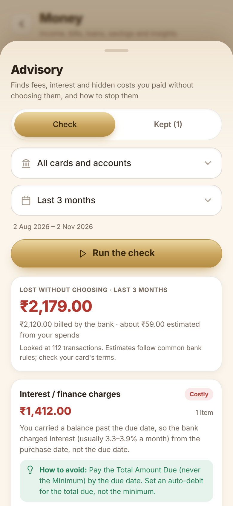
Advisory
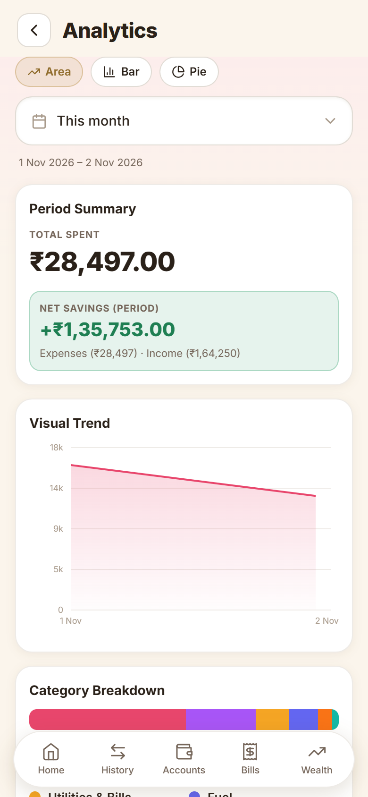
Charts
Card advisor. The best card for each kind of spend and for brands like Swiggy or Amazon, with the conditions (minimum spend, caps, online only). UPI goes only to RuPay cards. Last month's missed rewards with the transactions, and fee-waiver progress with the spend needed each month.
Advisory. Finds what you paid without choosing it: interest, late fees, over-limit, cash-advance fees, annual fees, SMS charges, forex mark-up, wallet-load fees and fuel surcharge. Each comes with how to avoid it, and lessons can be kept.
Charts. Where the money went, by category and month, with filters by period and account.
🔒 Your data and the app
Private by design, easy to move.
Profile
Home
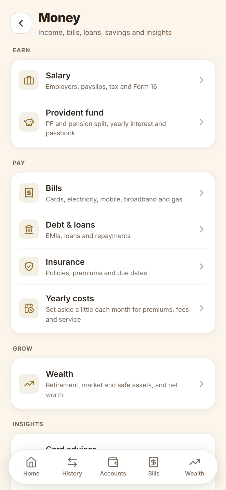
Money hub
Local only. Everything lives in the browser's IndexedDB on your phone. No account, no server, no analytics. SMS text and statements never leave the device.
Backup and restore. Export one JSON file with every table and setting, and restore it on another phone. Export reminders show how old your last backup is.
Android and PWA. Runs as an installable offline web app and as an Android app (Capacitor) that can read SMS. Light and dark themes.
Consistent navigation. Five tabs along the bottom (Home, History, Accounts, Bills, Wealth), a Money hub for everything else, and the same back arrow on every page you open from it. Dates are typed as dd-mm-yyyy and shown as 20 Nov 2026.
The demo data
Every name, number and amount in the screenshots and in this PDF is invented for the demo. No real account or person is shown.
Persona: Aarav Mehta (made up). This is what the screenshots were taken from.
Cards and accounts
Name
Kind
Detail
HDFC Millennia ••4821
Credit card, Visa
Limit ₹3,00,000 · cycle on the 15th · lifetime free
SBI Cashback ••7765
Credit card, Visa
Limit ₹2,00,000 · cycle on the 1st · fee ₹1,179 a year
HSBC Live+ ••3902
Credit card, Visa
Limit ₹1,50,000 · cycle on the 2nd · fee ₹1,179 a year
HDFC RuPay ••1188
Credit card, RuPay
Limit ₹1,00,000 · UPI enabled
HDFC Bank account ••5521
Savings
Balance ₹1,24,560.50
Indian Bank account ••8870
Savings (salary)
Balance ₹18,240.25
HDFC Millennia Debit ••2076
Debit card
Linked to the HDFC account
Bills
Bill
Provider
Detail
Home electricity
TNEB (TNPDCL)
8 bills with meter readings, every 2 months
LPG cylinder
Indane (Indian Oil)
3 cylinders logged, about 69 days each
Airtel prepaid
Airtel
₹859 every 84 days
Home broadband
ACT Fibernet
₹1,180 a month
Wealth
Asset
Type
Invested → current
PPF - SBI ••4417
PPF
₹5,82,000 deposited, interest credited yearly
Nifty 50 index fund
Mutual fund
₹4,20,000 → ₹5,05,200
Flexi cap fund
Mutual fund
₹1,80,000 → ₹2,14,800
Direct equity
Stocks
₹1,50,000 → ₹1,87,500
Sovereign gold bond
Gold
₹1,20,000 → ₹1,72,000
NPS Tier 1
NPS
₹2,10,000 → ₹2,46,000
Loans and insurance
Item
Kind
Detail
Home loan
Reducing balance
₹35,85,000 owed at 8.6% · EMI ₹38,500
Car loan
Reducing balance
₹4,12,000 owed at 9.1% · EMI ₹15,600
Business cash credit
Flexible
₹1,85,000 owed at 11.5% · no fixed EMI
LIC Tech Term
Term insurance
Cover ₹1.5 crore · ₹21,400 a year
Star Family Health Optima
Health insurance
Cover ₹10 lakh · ₹24,600 a year
ICICI Lombard Car Insurance
Vehicle insurance
₹9,800 a year
Salary
Item
Detail
Employer
Northwind Technologies, Senior Engineer
CTC
₹21.5 lakh after the last revision
Payslips
14 months of payslips · PF ₹7,800 a month
Transactions
About 120 spends, bills, salary credits and card payments over four months
All screens
Home
History
Accounts
Bills
Electricity bill
Card statements
Wealth
PPF
Money hub
Salary
Provident fund
Debt and loans
Prepay what-if
Insurance
Yearly costs
Card advisor
Advisory
Charts
Profile
Roadmap
Planned, not built yet.
Planning
GoalsEmergency fund (months of expenses covered), down payment and retirement corpus. Each can draw on EPF, PPF and SIPs.
Insurance adequacyCompare term cover with about 10 times your income from payslips, and check the health cover too.
Retirement projectionEPF, PPF and NPS growth to the age you pick.
Ask and remind
Ask in plain wordsA search bar that answers "how much on Swiggy in October?" from your own data.
Due-date calendar and remindersA next-30-days view and phone notifications before every due date.
Data health screenUnlinked transactions, stale balances, cards without a cycle and bills without a due date, each with a fix button.
Money care
Tax and 80C summaryProvident fund, PPF, insurance and payslips totalled for the year, with Form 16 checked against payslips.
Recurring chargesSpot subscriptions and SIPs in your transactions and offer them as bills.
Net worth over timeAssets less liabilities, saved every month as a trend.
Mutual fund statement importOne CAS statement fills in your funds, units and value.
Nested categories and budgetsSub-categories with a monthly budget for each.
Safer dataWeekly backup reminder, share to Drive, and an optional PIN or fingerprint lock.